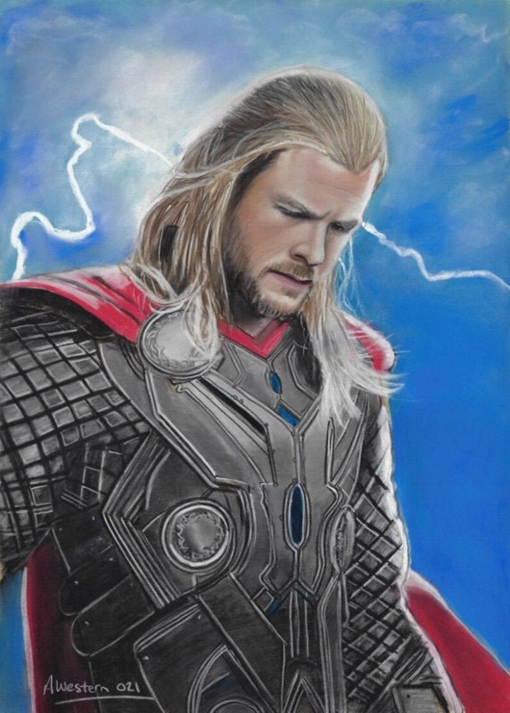
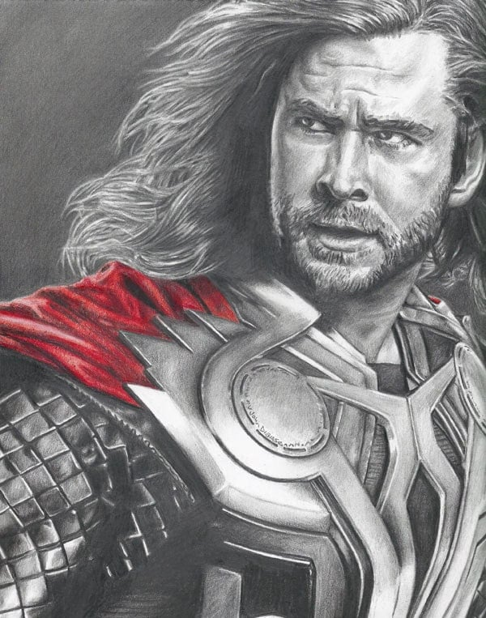

Thor



Historia de Thor
Thor es un superhéroe ficticio que aparece en los cómics estadounidenses publicados por Marvel Comics. Es el dios del trueno asgardiano basado en la deidad homónima, del pueblo ficticio inspirado en el mundo de Asgard de la mitología nórdica. En su tierra natal es conocido como Thor Odinson pero fuera de esta utiliza la identidad secreta de Donald Blake.Es poseedor del martillo encantado, Mjolnir, que le otorga capacidad de volar y manipular el clima entre sus otros atributos sobrehumanos, además de concentrar su poder.
Debutando en la Edad de Plata de los Libros de Cómics, el personaje apareció por primera vez en Journey into Mystery # 85 (agosto de 1962) y fue creado por el dibujante Jack Kirby, el editor Stan Lee y el guionista Larry Lieber. Ha protagonizado varias series en curso y series limitadas, y es miembro fundador del equipo de superhéroes, Los Vengadores, apareciendo en diferentes números de esa serie. El personaje también ha en diversos productos de Marvel, incluidas series de televisión animadas, películas, videojuegos, ropa, juguetes y tarjetas de intercambio.
El padre de Thor, Odín, decide que su hijo necesita que le enseñe la humildad y, en consecuencia, coloca a Thor (sin recuerdos de la divinidad) en el cuerpo y los recuerdos de un estudiante de medicina humana existente, parcialmente discapacitado, Donald Blake.Después de convertirse en médico y de vacaciones en Noruega, Blake presencia la llegada de una partida de exploración alienígena. Blake huye de los extraterrestres a una cueva. Después de descubrir el martillo de Thor, Mjolnir (disfrazado como un bastón) y golpearlo contra una roca, se transforma en el dios del trueno. Más tarde, en Thor# 159, se revela que Blake siempre ha sido Thor, el hechizo de Odin lo ha llevado a olvidar su historia como El Dios del Trueno y creerse mortal